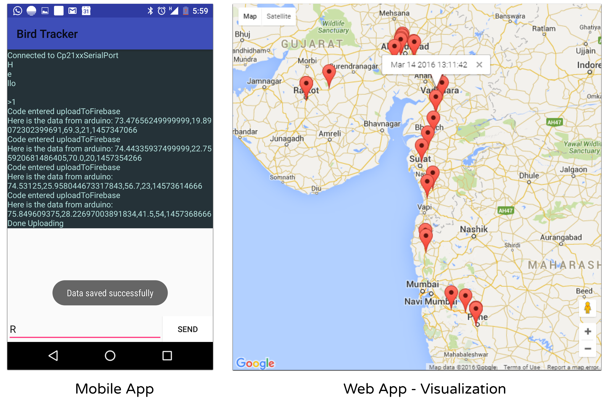

Prototype


The aim of this project was to develop a prototype for a system to track migration patterns of birds found in and around the Indian subcontinent. The challenges involved with this project were to reduce the size of the tracker, optimizing battery usage and carry out the task of tracking birds without recapturing them. With this system, we wished to create social awareness through crowd sourcing and lower the commercial cost of such a system for ornithologists and research purposes in academia.
Puneet Beri
Piyush Dawande
Ruturaj Eksambekar
Ruta Gokhale
My role in the project was to design and develop the tracker & transceiver module, enable data transfer over RF using Arduino firmware coding; and to develop a website which will be used to display the migration behavior data which has been uploaded by the mobile application present in the base stations.
September 2015 – June 2016
The project comprised of four main modules namely on-bird tracker, transceiver module, android mobile application and web application. We later integrated a SIM based tracker as well.
The tracker is mounted on the bird. It includes a micro-controller, power source, GPS sensor, an accelerometer and a temperature sensor. The tracker operates on a periodic wake-up cycle. The sensors collect the geo-location, orientation and temperature data and store it in the form of records in the tracker memory (EEPROM). The tracker wakes up on getting an incoming request from a mobile device in the vicinity. Upon reception of a request, a connection is established and the tracker pushes all the data records in its memory to the mobile device. The data from the tracker is successfully flushed after successful acknowledgement from the mobile app.
The transceiver broadcasts the request generated from the mobile app in the surrounding area. A connection is established between the transceiver and the closest tracker in the vicinity. After successfully establishing a connection, the data records from the tracker are received by the transceiver and then transmitted to the app in the mobile device via UART-to- USB. The app then generates an acknowledgement which is sent to the tracker through the transceiver.
Upon starting the app, it first generates and broadcasts requests to any surrounding trackers in the vicinity. The closest tracker in range responds with a signal and a dedicated connection is established. The app receives data from the tracker until all the tracker data records are transmitted. The app then generates and sends an acknowledgement to the tracker via the transceiver. Upon availability of mobile networks, the app pushes all its data to the cloud server. After receiving all the app data, the server replies with an acknowledgement, after which the app flushes all its stored data.
The web app fetches the data from the cloud server (Firebase) and displays the migratory routes and patterns in a Google maps applet. It performs appropriate processing of the data as per user queries and displays the required results. The user queries may include requests for specific data such as a query for a specific bird which will display its last known location, its route of migration, the speed and temperature of its environment.
Initially, we tested individual modules to verify the interoperability of the different components by using dummy data. To test the entire prototype, we physically carried the tracker module with us and went on a drive to test the entire functionality of every module.
We conducted extensive research and did a through literature survey for this project. With this in mind, we published a research paper in International Journal on Recent and Innovation Trends in Computing and Communication (IJRITCC), ISSN: 2321-8169, PP: 543 – 545.
URL: Click here for research paper.